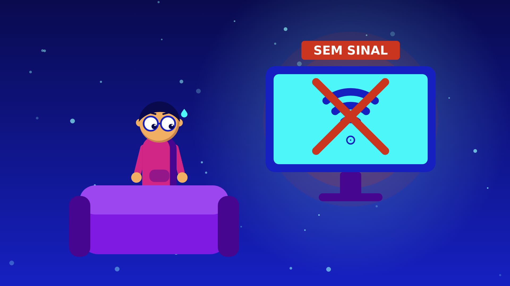

Plano 010:00 · 5 s
Gancho“Você já ficou dez minutos sem internet e sentiu o chão sumir?”
Téo, nosso nerd, no sofá, centralizado e pequeno no quadro, cercado de espaço vazio. O ícone de Wi-Fi na tela vira um X vermelho brasa #C9351E com pulso de alerta. Partículas ciano flutuando.